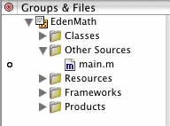

By default, there should be a main.m file in the Other Sources folder. You don't need to make any modifications to it. The #import <Cocoa/Cocoa.h> line can be also replaced with #import <AppKit/AppKit.h>. The Cocoa library consists of two other libraries, AppKit and Foundation. So adding just <Cocoa/Cocoa.h> should work just as well as adding both the AppKit and Foundation headers. This file remains untouched for the remainder of this project.
The entire main.m file will look like this:
#import <Cocoa/Cocoa.h>
int main(int argc, const char *argv[])
{
return NSApplicationMain(argc, argv);
}